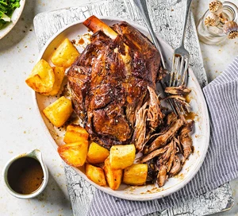

Lamb Shoulder Recipe

Description
Cook lamb low and slow to produce tender, deeply flavoured meat with minimal effort. Serve with potatoes and seasonal greens, if you like
Ingredients
- 1¾kg bone-in lamb shoulder
- 2 tsp vegetable or sunflower oil
- 200ml red wine
- 2 carrots, roughly chopped
- 2 onions, quartered
- 2 sticks celery, roughly chopped
- 2 bay leaves
- a few rosemary sprigs
- a few thyme sprigs
- 300ml lamb, chicken or vegetable stock
- potatoes and seasonal greens, to serve (optional)
Steps
- Dry the lamb with a clean tea towel or kitchen paper, rub all over with the oil, then season well with salt and freshly ground black pepper.
Heat a large frying pan over a medium heat and brown the lamb all over – this will take around 10-12 mins. Remove from the pan and set aside. Pour the wine into the pan and cook for 1-2 mins to cook off the alcohol. Turn off the heat.
- Tip the veg and herbs into your slow cooker, then lay the lamb on top. Pour in the stock. Cook on high for 6 hrs or low for 8 hrs, turning halfway, if you can.
- Remove the lamb and set aside to rest. Set a sieve or colander over a bowl and capture the liquid (either discard the vegetables or eat them with the meal – they’ll be soft but taste great).
You can use the cooking liquid to make a gravy simply by thickening with flour or cornflour. Serve with potatoes and seasonal greens, if you like.